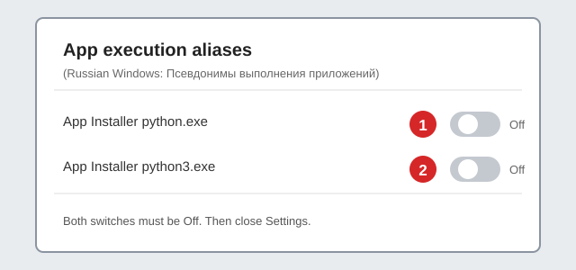
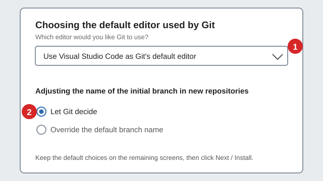
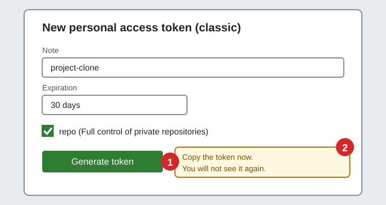
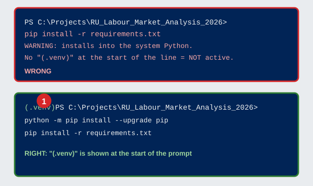
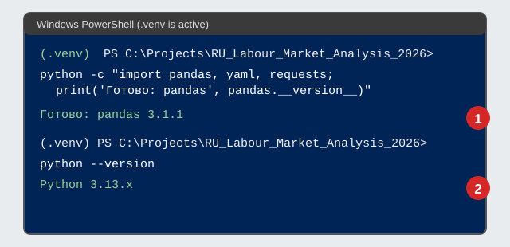

Для кого: для тех, кто никогда не устанавливал Python, Git и не работал в терминале.
Время: 1–2 часа (установка Python занимает несколько минут, установка библиотек — до 10 минут).
Нужно: права администратора на компьютере и интернет.
Контакт координатора по вопросам установки: hseprojectcoordinator@gmail.com. Не отправляйте туда токены и пароли.
Выполняйте шаги по порядку. Каждый этап заканчивается проверкой. Если проверка не прошла — не переходите дальше, а исправьте этап по разделу «Если что-то пошло не так» в конце.
Прогресс (отметьте, что уже сделано — на странице отметки не сохраняются):
Если компьютер рабочий или корпоративный и установка запрещена — скажите координатору до начала. Не ставьте программы обходными путями.
Нужен Python 3.13 (или новее, но не ниже 3.11). Скачивайте только с сайта python.org, а не из сторонних источников.

Не снимайте галочку PATH. Если вы её пропустили, Python не будет находиться командой python. Исправление: «Параметры → Приложения → Установленные приложения» → Python → «Изменить» → «Modify» → отметьте «Add Python to environment variables» → Next → Install. Либо удалите Python и установите заново с галочкой.
Ловушка Microsoft Store. В Windows 10/11 команда python может открывать магазин Microsoft Store вместо Python. Чтобы отключить эту заглушку: «Параметры → Приложения → Дополнительные параметры приложений → Псевдонимы выполнения приложений» (в английском Windows: App execution aliases). Выключите переключатели python.exe и python3.exe (см. картинку ниже).

Откройте PowerShell: «Пуск» → введите powershell → Enter. Выполните:
python --version
Ожидаемо: Python 3.13.x. Если появилось «Python не найден» или открылся Microsoft Store — см. раздел «Если что-то пошло не так».
Альтернатива: winget install Python.Python.3.13 (в PowerShell). Тогда тоже закройте и откройте PowerShell.
brew install python@3.13
Проверка: python3 --version. Ожидаемо: Python 3.13.x. На macOS всегда используйте python3, а не python.
sudo apt update sudo apt install python3 python3-venv python3-pip
Проверка: python3 --version. Для Fedora: sudo dnf install python3 python3-pip.
Git — программа, которая скачивает проект из GitHub и хранит историю изменений.

Не выбирайте Vim. Если Git откроет Vim (чёрный экран с непонятными командами), выйдите так: нажмите Esc, затем введите :q! и Enter.
Проверка: закройте и откройте PowerShell, затем выполните:
git --version
Ожидаемо: git version 2.x.x.
brew install git # macOS sudo apt install git # Ubuntu / Debian
На macOS при первом запуске git может предложить установить Command Line Tools — согласитесь. Проверка: git --version.
VS Code — редактор, в котором удобно открывать и читать файлы проекта.
Открытие папки проекта делается позже (этап 5 или после клонирования): меню File → Open Folder… и выбор папки проекта целиком.

Открывайте всю папку проекта, а не один файл из неё. Иначе не будут работать команды терминала внутри VS Code.
project-clone); Expiration — 30 дней; отметьте scope repo. Нажмите «Generate token» (пункт 1 на картинке).
Не отправляйте токен и пароль в чаты, координатору, в файлы проекта и в скриншоты. Токен — это ключ от вашего аккаунта.
Альтернатива: в VS Code нажмите значок «Accounts» (внизу слева) → «Sign in with GitHub» и войдите в браузере. Тогда токен вводить не нужно.
C:\Projects (Windows) или ~/Projects (macOS/Linux).
powershell и нажмите Enter.git clone https://github.com/GRich1575/RU_Labour_Market_Analysis_2026.git
cd RU_Labour_Market_Analysis_2026

git clone. 2 — после cd путь в приглашении заканчивается на имя проекта.Не скачивайте проект внутри другого проекта и не делайте git clone второй раз в ту же папку: если папка уже есть, Git выдаст ошибку «already exists». В этом случае просто выполните cd в существующую папку.
Виртуальное окружение — отдельная папка .venv внутри проекта, где хранятся библиотеки только этого проекта. Так они не смешиваются с другими программами компьютера. Папка .venv не загружается в GitHub (это указано в .gitignore).
python -m venv .venv
Y:
Set-ExecutionPolicy -Scope CurrentUser RemoteSigned
.\.venv\Scripts\Activate.ps1
Когда окружение включено, в начале строки появляется (.venv) (пункт 1 на картинке).

(.venv) в начале строки означает, что окружение включено. Без него библиотеки ставятся не туда.Не выполняйте pip install, пока не видите (.venv). Не запускайте PowerShell «от имени администратора» для установки библиотек.
Если появилась ошибка «cannot be loaded because running scripts is disabled» — выполните шаг 2 ещё раз. Если ошибка осталась, это ограничение политики организации: сообщите координатору и не меняйте политику на Unrestricted.
Если .venv создан неправильно (ошибки при установке, не тот Python), удалите папку и создайте заново. В PowerShell: Remove-Item -Recurse -Force .venv. Команду выполняйте только в папке проекта.
python3 -m venv .venv source .venv/bin/activate
Окружение включено, когда в начале строки появилось (.venv). На этих системах не используйте sudo pip.
(.venv).python -m pip install --upgrade pip pip install -r requirements.txtУстановка занимает несколько минут. Не закрывайте окно, пока не появится приглашение с
(.venv) снова.python -c "import pandas, yaml, requests; print('Готово: pandas', pandas.__version__)"
Ожидаемо: строка Готово: pandas 3.x.x.python --versionОжидаемо:
Python 3.13.x (или новее, не ниже 3.11).
Если на Windows в конце команды pandas появилась строка с ошибкой «No module named …», значит окружение не включено. Включите его (этап 6, шаг 3) и повторите проверку.
| Что видите | Причина | Что делать |
|---|---|---|
python не найден / открылся Microsoft Store | Не отмечен PATH или включена заглушка Store | Этап 1: переустановите Python с галочкой PATH; отключите псевдонимы python.exe и python3.exe. Закройте и откройте PowerShell |
git не распознан | Терминал открыт до установки Git | Закройте и откройте терминал. Если не помогло — переустановите Git (этап 2) |
cannot be loaded because running scripts is disabled | Не разрешён запуск скриптов | Этап 6, шаг 2: Set-ExecutionPolicy -Scope CurrentUser RemoteSigned |
No module named 'pandas' | Окружение не включено или библиотеки не установлены | Проверьте (.venv) в начале строки; включите окружение и повторите pip install -r requirements.txt |
destination path ... already exists | Папка проекта уже скачана | Не клонируйте повторно: выполните cd RU_Labour_Market_Analysis_2026 |
| Git просит логин и пароль, пароль не подходит | GitHub не принимает пароль | Используйте токен (этап 4) вместо пароля |
Permission denied / externally-managed-environment (macOS/Linux) | Попытка ставить библиотеки в системный Python | Не используйте sudo pip. Включите .venv и повторите установку |
| Ошибка при установке библиотек, сбой сети | Нестабильный интернет или прокси | Повторите pip install -r requirements.txt. Если снова ошибка — скопируйте последние 10 строк вывода координатору (без токенов) |
Задание (необязательно): откройте config/sources.yaml в VS Code, найдите источник cbr_key_rate и прочитайте поля enabled и data_2026. Затем в терминале выполните git status и запишите результат.
Подробнее: docs/prerequisites.md, шпаргалки в docs/cheatsheets/. Версия этого руководства для английского языка: setup_guide_en.html. Не публикуйте логины, токены и пароли.